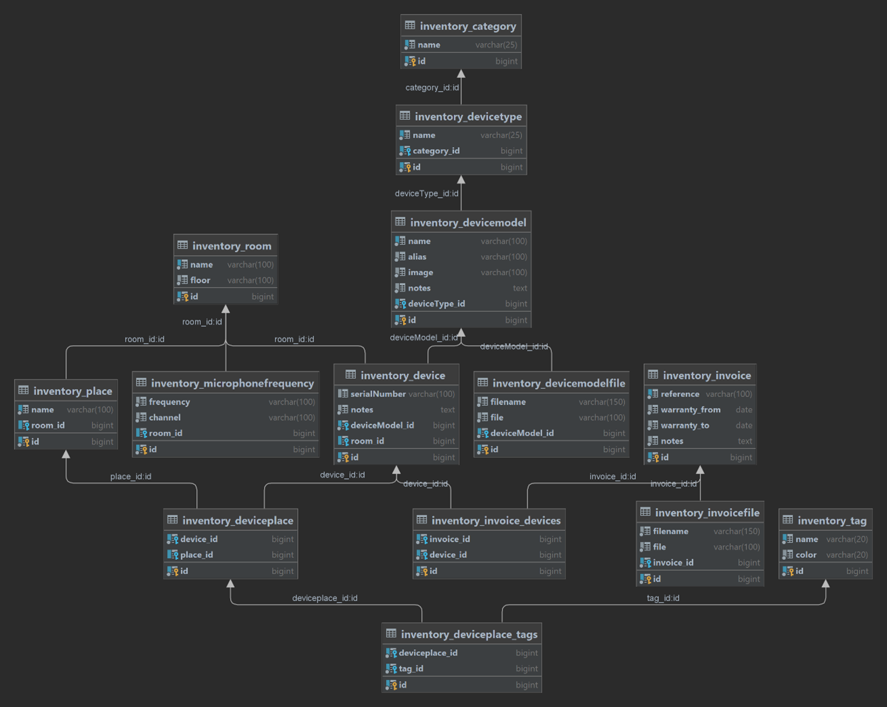
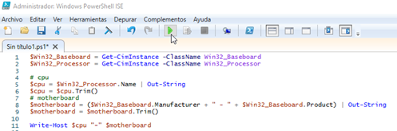
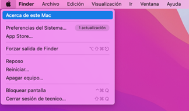
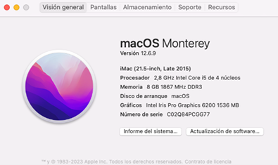

1 – Introducción
La aplicación se ha desarrollado en:
- Framework Django
- Lenguaje Python
- Base de datos Postgres
Tareas del responsable del sistema (luisvela@us.es y vinfraestructurafcom@us.es):
- Actualizaciones
- Mejoras
- Copias de seguridad
- Control de roles:
o Invitados
o Técnicos
o Administradores
2 – Inventario de Informática: acceso y roles
Acceso con rol “Invitado” (se puede ver, pero no insertar/modificar/borrar):
- URL de acceso: 10.1.21.24
- Usuario: invitado
- Contraseña: inventariofcom__ (2 guiones bajos al final)
3 – Inventario de MAV: acceso y roles
Acceso con rol “Invitado” (se puede ver, pero no insertar/modificar/borrar):
- URL de acceso: 150.214.225.199
- Usuario: invitado
- Contraseña: inventariofcom__ (2 guiones bajos al final)
Acceso con rol “Técnico” (se puede insertar/modificar/borrar, pero no gestionar usuarios ni crear un nuevo almacén):
- URL de acceso: 150.214.225.199
- Usuario: tecnico
- Contraseña: inventariofcom__ (2 guiones bajos al final)
4 – Organización y roles
Roles:
Las personas con rol “Técnico” serán las responsables de insertar/modificar el contenido y comprobar la consistencia de los datos con respecto a la realidad.
Personas con rol “Invitado” tendrán acceso a los datos del inventario para obtener/filtrar la información deseada.
El Decano, la Administradora y el Vicedecano de Infraestructura tendrán acceso mediante rol “Invitado” para conocer el estado de la infraestructura del centro tanto para el inventario de Informática como para el de MAV.
Gestión de usuarios:
Cada persona física tendrá un usuario propio. La gestión de usuarios o las incidencias relacionadas con esto (olvido de contraseña) es tarea del administrador del sistema.
Administrador del sistema (luisvela@us.es) ES DISTINTO administrador del inventario (rol “Técnico).
Logs:
Django proporciona un sistema de logs para conocer en todo momento qué acciones realizada cada usuario del sistema.
5 – Procedimientos de trabajo (sin entrar en la aplicación)
Hay que tener en cuenta el inventario para INTRODUCIR o MODIFICAR datos siempre que se den estos casos de uso de forma genérica (luego especificaremos muchos más)
- Cuando se compre un nuevo dispositivo
o Se debe pedir a Carlos de gestión económica la hoja de inventario del centro / albarán de compra / factura. Todo sirve.
- Cuando se va a reponer un nuevo dispositivo
- Cuando se almacena un dispositivo
- Cuando se va a tirar un dispositivo (primero se almacena)
- Cuando se tira finalmente un dispositivo (se lo lleva una empresa)
Nota*: Hay que inventariar todo el material obsoleto y antiguo. El CICUS quiere hacer un museo con esos dispositivos.
6 – Diagrama UML del modelo de base de datos

Observando el diagrama veo que debo realizar las siguientes tareas en ESTE ORDEN:
1- Definir categorías de dispositivos
2- Definir tipos de dispositivos
3- Definir modelos de dispositivos y sus ficheros asociados (como documentación o manuales .pdf)
4- Definir espacios
5- Crear dispositivos
Una vez creados mis dispositivos podré:
- Definir puestos
o Asociar dispositivos a puestos
o Asignar etiquetas a puestos
Nota*: un puesto sólo puede tener un dispositivo
- Crear facturas
o Asociar facturas a dispositivos
7 – Práctica: Insertar datos
1- Crea una categoría de dispositivos
2- Crea un tipo de dispositivo
3- Crea un modelo de dispositivo
a. Busca una foto en internet y súbela
b. Busca la documentación oficial de ese modelo y súbela
4- Crea un modelo de dispositivo de tipo “Ordenador”
a. ¿Cómo lo nombro?
Un PC – Abre la aplicación “Powershell ISE” y ejecuta:
$Win32_Baseboard = Get-CimInstance -ClassName Win32_Baseboard
$Win32_Processor = Get-CimInstance -ClassName Win32_Processor
# cpu
$cpu = $Win32_Processor.Name | Out-String
$cpu = $cpu.Trim()
# motherboard
$motherboard = ($Win32_Baseboard.Manufacturer + " - " + $Win32_Baseboard.Product) | Out-String
$motherboard = $motherboard.Trim()
Write-Host $cpu "-" $motherboard

Un iMac – (información del sistema)


5- Crea un espacio
6- Crea 2 dispositivos de ese modelo de dispositivo en el espacio creado
7- Crea 2 puestos de dispositivo
8- Asigna dos dispositivos a los 2 puestos creados
9- Asigna una etiqueta a algún puesto de dispositivo
10- Crea una factura y añade los 2 dispositivos creados
a. Añade un .pdf con la factura
8 – Práctica: casos de uso especiales
11- Intercambiar de lugar un dispositivo de tipo ordenador por otro
12- Mover un dispositivo al almacén
13- Crear múltiples dispositivos de un mismo modelo
14- Asignar múltiples dispositivos de distintos tipos de dispositivo a una única factura
15- Mover un dispositivo al almacén
16- Qué hacer cuando se va a tirar un dispositivo
9 – Práctica: Filtrar información
Utilizando la información insertada en el sistema durante la sesión de práctica o el inventario de Informática (10.1.21.24), realiza las siguientes tareas:
11- Filtrar todos los modelos de cierto tipo de dispositivo
12- Filtrar todos los dispositivos de cierto espacio
13- Filtrar todos los dispositivos de cierto modelo
14- Filtrar todos los dispositivos de cierto modelo en garantía/fuera de garantía
15- Comprobar que características tiene cierto ordenador de un espacio concreto
16- Buscar la factura/hoja de inventario de un dispositivo concreto
17- Ver cuantas unidades de cierto modelo de dispositivo tengo en el almacén